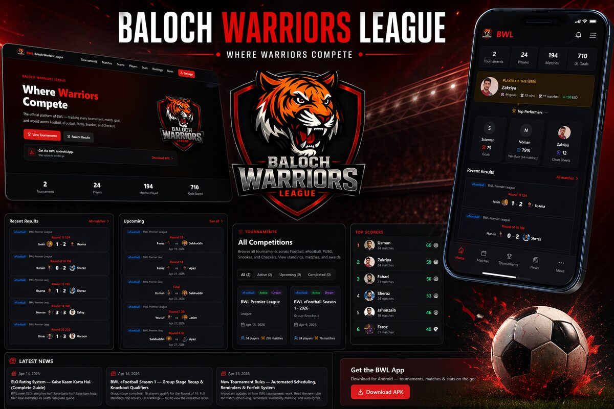
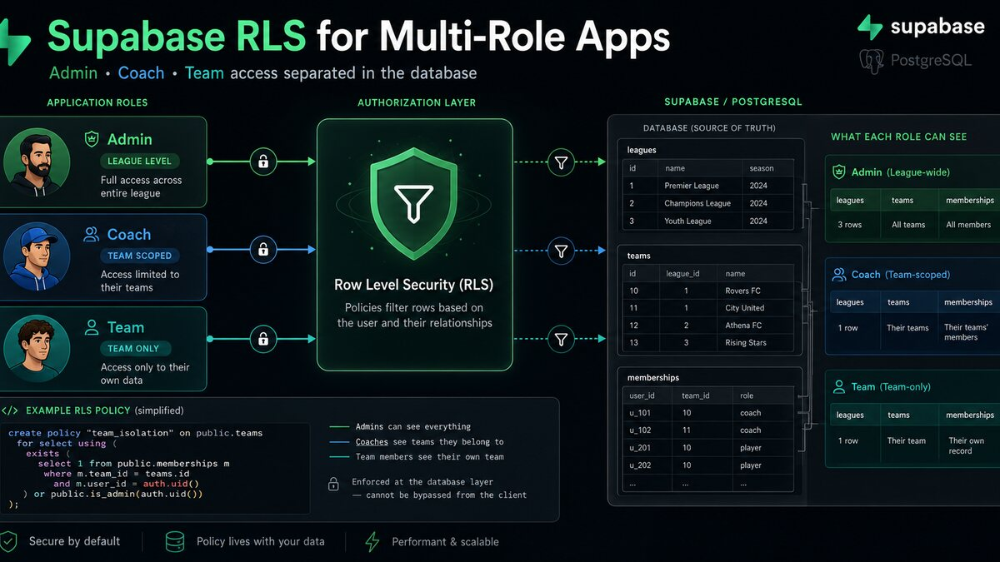

Tournaments, fixtures and results
Tournament, match and results management across five games, from group stages to the final.
Case study · Multi-role web platform
This BWL League case study explains how I built the web platform for Baloch Warriors League, a competitive league that tracks tournaments, matches, goals and rankings across eFootball, Football, PUBG, Snooker and Checkers. Admins, coaches and teams all work in the same app. The hard part wasn't the screens. It was making sure each person can only see and change what their role allows, with the rules enforced inside PostgreSQL by Supabase Row Level Security.
The platform is live at bwlleague.com and people use it every day, so an access mistake would affect real players and teams, not a demo.

Admins run the league. Coaches manage their own team. Teams follow their own matches and results. They all share one application and one database, but they should never share the same access. A coach can update their own team's match, not another team's, and never the league settings.
Supabase lets the browser query the database directly. That makes building fast, but it changes the security model. Hiding an admin button in React only changes what someone sees. A curious user can still open the browser's dev tools and call the API. So the real rules had to live in the database itself.
What I built
The interface gives each role its own experience. The database decides what each role can actually read and change.
Tournament, match and results management across five games, from group stages to the final.
Player profiles, top scorers, champions and ELO-based rankings that update as results come in.
Separate admin, coach and team experiences, with a membership row linking each user to their league or team and the role they hold there.
RLS enabled on every exposed table, with a separate policy for reading, creating, updating and deleting.
Score updates through Supabase Realtime, so everyone following a match sees the change without refreshing.
The Supabase service role key stays in trusted server code, and every policy is tested with real sessions for each role, including requests that should be denied.
It's tempting to write rules like "admins can do everything" and "coaches can edit scores". Those rules are incomplete until the data says which league, team or match a user belongs to. So every policy answers two separate questions:
Here is a simplified version of the rule for reading matches. The important part is the relationship check, not a role sent by the browser:
alter table public.matches enable row level security;
create policy "members can view league matches"
on public.matches
for select
to authenticated
using (
exists (
select 1
from public.memberships m
where m.user_id = (select auth.uid())
and m.league_id = matches.league_id
)
);The user ID comes from the signed-in session through auth.uid(). The browser can't pick a different user ID and borrow someone else's access.
Reading, creating, updating and deleting are different permissions, so each gets its own policy. A USING rule decides which existing rows a user can see or touch. A WITH CHECK rule validates the new data, so a valid user can't move an allowed row into another team's scope. Updates need both, plus a matching read policy. Delete gets its own decision: being able to edit a score doesn't mean you can delete the match.
A strong policy on the main table doesn't protect a related table that has none. I review every exposed table, view and storage bucket as its own item. Views need extra care, because they can bypass the policies of the tables underneath unless they run with the caller's permissions.
A policy isn't proven just because an admin can complete an action. I test the negative cases too: a coach from another team, a signed-in user with no membership, an anonymous request, and a user trying to change the ownership field during an update. Each database operation is tested on its own, and the rules are written down as a small access matrix of roles against actions, so they can be re-checked after every schema change.

BWL League is live at bwlleague.com, with people using it every day. In November 2026 the platform's own counters showed 7 tournaments, 32 players, 608 matches played and 1,994 goals recorded. In April 2026 the same counters showed 194 matches, so the league has more than tripled its recorded matches on the platform in about seven months.
Tell me about your users and their roles. I'll help you design the data model and access rules before they become hard to change. See my AI SaaS development services for how I work.